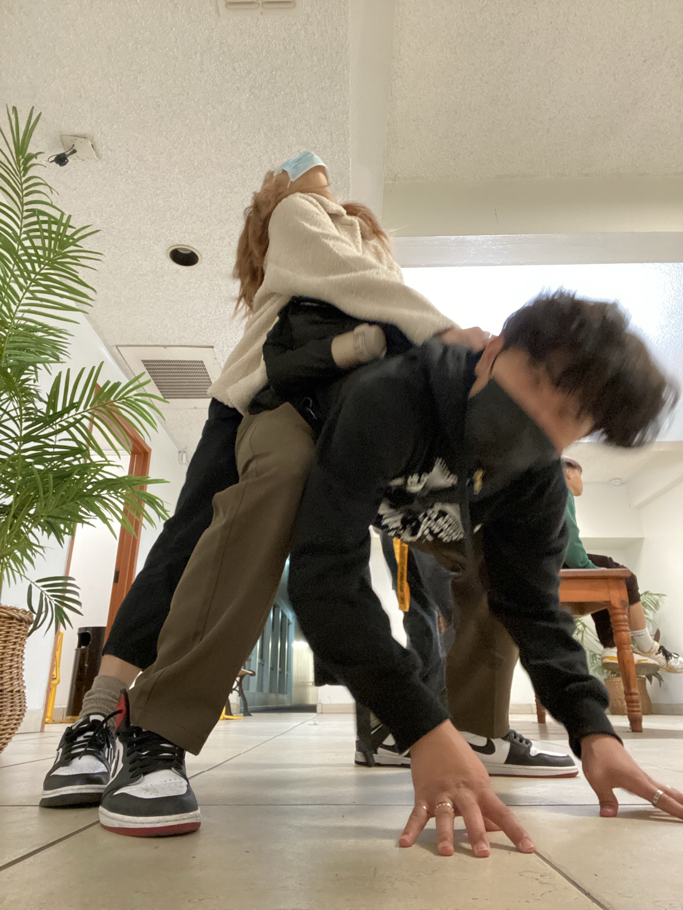

|  |
Sorry this website is not the coolest yet since I am still a web dev noob LOL. I incorporated everything I know and more since I had to search up things that I did not know yet. I know you said small surprise yesterday, but I felt like I owe you something bigger than something small. Sorry I have not been the best boyfriend these past few days not being there for when you needed me and being an asshole sometimes. I love you so much and I would not want to trade the world for anything else. You are the love of my life anf you mean the absolute world to me. It really hurt me yesterday when you said you did not want to say I love you back to me, it was really eye opening. I felt like in that moment I knew I had to treat you better if I wanted to keep you for the rest of my life. You make me the happiest boy ever and I want to marry you. Thank you for always being there for me always. Whenever I see you I see my future with you, with our awesome floor to ceiling windows in our cozy neutral toned home with our calico and orange cat, miso and mogu, our chameleon, our shiba inu, and our children!!! You are the one I want that life with. In three days our 1 year and 1 month is coming up, and today we will celebrate. I will send you an awesome pawesome pasta dish, IDK from where but we will figure that out. If you do not want pasta just let me know. We will finish WALL-E as well. See you soon and I hope you slept well. I love you as much as the ocean loves the moon, Cheryl.